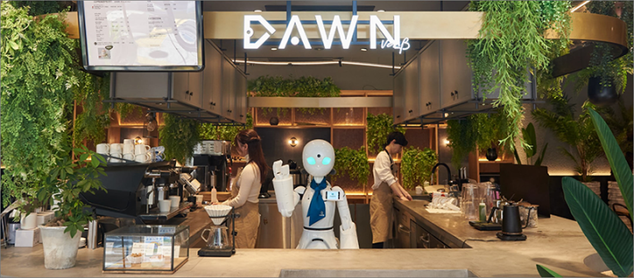
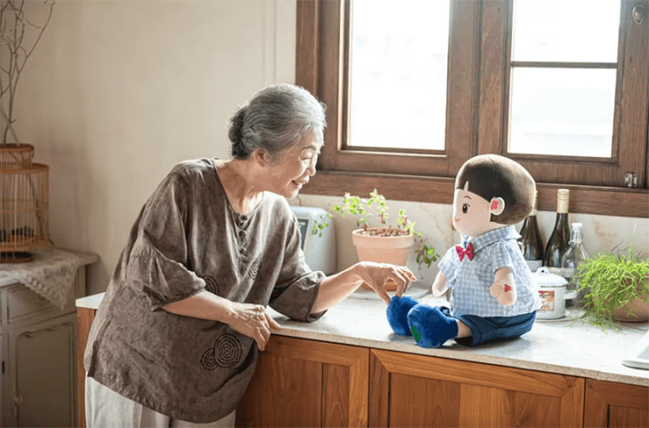

In 2023, I traveled to South Korea on a Fulbright fellowship, excited to revisit some of my favorite places from 30 years earlier when I was an exchange student at Han Nam University. Han Nam is located in Daejeon City, in the heart of Korea, a university founded by Presbyterians in the 1950s, in the aftermath of the Korean War. Wandering along the campus, I was surprised by how much had changed in 30 years: Where the campus once ended, it now extends, marked by a contemporary-design coffee shop made of shipping containers, with its own coffee bean roaster. In the early 1990s, this was where young student activists would gather to read poetry and discuss Korea’s future before moving to the forests under the cover of the trees to practice protest dance, or talchum (멽띙).
Daejeon City is also the heart of Korea’s science and technology boom, with cutting-edge universities dotting the mountainous landscape. Students today rush by, focused on their smartphones, largely oblivious to the previous generation’s plight. Most are more interested in securing well-paying jobs than in the nebulous, lofty ideals their parents were so concerned with, such as democracy and freedom.
You’ll, of course, find the echoes of this generational shift throughout the West, too. However, what I found especially remarkable in South Korea is that the attitude toward technology—a source of immense skepticism and nihilism in the United States—is overwhelmingly positive. Not only are robots everywhere, but they are welcomed as dependable, efficient, and predictable. While living in Korea, I’ve often found it preferable to order at the automated kiosk or hand my dishes to the dish-collecting robot, so I don’t interrupt anyone at work. The robots at Incheon International Airport in Seoul, the museums in Daejeon, and the restaurants in Busan all switch easily between Korean and English, allowing me to navigate the country more easily. Robots and humans seem to work well together, and life runs smoothly.
Read more: “How Human Is Human?”
According to the World Robotics Statistics released by the International Federation of Robotics in 2021, South Korea has the world’s highest robot density, with 932 robots per 10,000 employees in manufacturing. This stands in sharp contrast to the rest of the world, which has an average of 126 robots per 10,000 employees in manufacturing. The use of robots in Korea has expanded into the service industry in the past few years.
In a 2013 study on attitudes toward robots in South Korea, researchers “found that users’ attitudes toward service robots and the perceived usefulness of the service robots were the main determinants of the users’ intention to use the robots.” Moreover, they also “found that the need to belong had a moderate impact on users’ beliefs concerning service robots.” Though more than a decade old, this study suggests that the cultural desire for belonging may be just as important as robot functionality in one’s attitude toward robots. As Jae-myoung Hong, the senior engineer of LG’s Smart Solutions Division, says, “In our view, artificial intelligence, robots and related solutions are not just new gadgets, but key technologies to support humans. ... In some cases, robots may perform jobs that are too dangerous or too complicated for regular workers.”
Robots are functional in a practical way, and that alone may be their appeal. However, some scholars suggest that Koreans’ acceptance of robots may be more culturally embedded and might go beyond the appeal of efficiency. Kwang-yeong Shin, professor of sociology at Chung-Ang University in Seoul, argues that the cultural acceptance of robots in Korea may have more to do with the Korean shamanist attitudes toward nonliving things. “We can think that any kind of non-human being might have a spiritual or super power beyond human capacity, whether it is a natural object or artificial object.”
The cultural reverence for inanimate objects and an acknowledgment of their spiritual possibilities are present in both the Japanese and Korean contexts, and spiritual rituals in both countries embrace the spiritual significance of inanimate objects in everyday life. In Japan, there are Shinto shrines devoted to dolls, needles, golf, and every type of quotidian object. There are even Buddhist funerals for robotic pets, acknowledging the importance of their companionship to their families. Viewing humans and robots as sharing characteristics would imply that they have similar moral status.
One of the more interesting cross-cultural comparative studies on perceptions of robots found vast differences between American and Korean attitudes toward them, and that “Koreans preferred robots as assistants more than both Turkish and U.S. participants, and as pets more than Turkish participants. Unlike Koreans, the majority of whom believed robots should have social roles (92 percent), most U.S. participants saw robots as tools (53 percent).” Multiple studies find the same results: Asians tend to embrace robots and view them as useful, whereas Americans tend to be quite suspicious of them because they may displace humans in the workforce and challenge notions of human exceptionalism.
Whatever the reason, robots and AI are viewed quite positively in South Korea and Japan, and the dangerous apocalyptic narrative that surrounds their utilization in the United States simply doesn’t exist in Asia. In fact, the last time I went to Incheon Airport in Seoul to meet family coming to visit me in Korea, I met a roving information robot, gliding along the terminal in the ticketing area to answer questions people might have about the airport layout: where the restrooms are, what restaurants are available, and even where flights and check-in are located in the terminal. A small toddler went up to the robot with her parents and talked to it. The robot’s large, friendly eyes and voice made it seem more approachable than the information desk often found at most airports. With a touchscreen that lets anyone choose a language to converse in with the robot, the language barrier is not a concern when seeking information. What this means, of course, is that Asia is leading the robot revolution and utilizing AI in some innovative and adaptive ways.
One of the most innovative uses of robots in the disability space can be found in the DAWN Avatar Café in Tokyo, Japan, which utilizes café robots remotely run by homebound disabled people to perform everyday tasks at the café and interact with people. The DAWN Avatar website states that it established the café for two primary reasons: to provide disabled people with a place to connect with others and to employ homebound disabled people, giving them a sense of purpose through financial independence. The café has multiple robots throughout—from a greeter robot that helps you find your reservation and a table to a robot that sells merchandise, robots that serve food and drinks, a barista robot that makes coffee, and finally, smaller tabletop robots that accompany you in your meal, explaining the restaurant concept and providing companionship as you eat and drink.

CAFE OF CONNECTIONS: DAWN Avatar Café in Tokyo, Japan, where homebound people remotely operate robots to run the café. Credit: OryLab Inc.
Next to each tabletop robot is a small picture of the person remotely operating it, where they live in Japan (the operators live throughout the country—not merely in Tokyo), and facts about themselves that they want to share with others visiting the café. I booked a reservation for dinner at DAWN Café with my daughter, and we were assigned a small table with a cute robot run by Koki Yanagida from his home in Kyoto. We were seated, then met Koki, who introduced himself, explained a little about the menu, took our orders, and relayed them to the kitchen.
I was excited to eat at DAWN Avatar Café because I love robots, but I was unprepared for the emotions I felt during this experience. DAWN’s website states that the primary purpose of the robot café is for patrons to develop a connection with its employees through the robots. But, to be quite honest, even as much as I love robots and feel generally positive toward them, I didn’t expect to come out of the experience with any sort of emotional connection. That feeling quickly changed, however, when I sat down to have dinner with my robot companion run by Koki.
Koki activated his robot, turning on its little eyes so we knew he was with us, and then told us about his life. Koki shared with us how shortly after he turned 18 and graduated high school, he was in a terrible car accident that left him paralyzed from the neck down, forestalling his dream of going off to college and leaving him unable to use his arms and legs. He operates his robot with his mouth through a small straw, which remotely controls all its movements. The evening was particularly poignant because I was there with my daughter, who had just graduated from high school and was in the same stage of life as Koki when he had his accident. Koki asked my daughter about her plans to attend college and congratulated her on graduating from high school. I could tell she was deeply moved by his life circumstances and optimism.
At one point in our conversation, another robot passed by, and Koki called out to him, asking how he was doing. It was touching to see everyone interacting and checking in on each other. At the end of the evening, both my daughter and I felt sad to leave because we were so unexpectedly moved by the experience. Those who are not disabled don’t always see the value of—or even the possibilities for—the connections that technologies offer, particularly for those who may not be able to leave their home or get out and about on a regular basis.
In South Korea, robots are also being used for a phenomenon known as “lonely deaths,” which describes the contemporary phenomenon of seniors who live and die alone. In previous generations, it was common for older people to live with their children and grandchildren, but now an increasing number of older Koreans live alone in their later years. In fact, the Korea-EU Research Centre reports that “the number of lonely deaths [in South Korea] soared from 1,669 in 2015 to 2,880 in 2020.”
To reduce lonely deaths and provide companionship more broadly, the government has been developing unique solutions. One of these is by equipping robots with Internet of Things (IoT) sensors, pieces of hardware that collect data and detect changes in the environment. Temperature, motion, image, and proximity sensors allow activity in a house to be monitored from another location. In short, your home alarm system is essentially an IoT sensor, though you may not have ever called it that. Having IoT sensors installed in the living quarters of seniors who live alone helps monitor them and support those who want or need to age in place and live independently of their families. Since South Korea has a national government insurance system, the sensors also enable oversight in case something happens at home, and urgent medical care is needed, but cannot be requested.
One government solution is the distribution of a robot called “Hyodol,” a cute little stuffed-person robot with big eyes and a friendly smile that provides companionship and personalized services, such as wake-up reminders and notifications to take medicine. The robot also sends a notification if it detects no movement for a certain period, and it sends emergency texts and calls if the user presses and holds its hand for more than three seconds. The robot comes preloaded with thousands of songs and various entertainment functions, including quizzes and games. Many users interact with their robots during mealtimes, and these conversations are tracked to monitor users and detect signs of cognitive decline.

ROBOT FRIEND: The AI-powered Hyodol companion doll. Credit: Hyodol.
Studies on Hyodol show that companion care robots work well alongside their human caregivers, providing an extra layer of support for those aging in place. In their 2023 study on Hyodol, Heesun Shin and Chihyung Jeon found that “robots do not substitute for human caregivers but displace or redistribute their tasks and responsibilities.” As AI’s capabilities continue to grow, care for the elderly will be an important area to watch, as the world’s population ages and traditional family structures can no longer be guaranteed to provide care as people age or to assist them in their dying.
In Japan, where the aging population is quickly growing, and the government expects to face a shortage of at least 380,000 caregivers by the year 2025, according to an article in NUVO, a sizeable portion of the national budget has been allocated to the development of AI “carebots” geared toward both aging in place and palliative care.
The article outlines the many AI options that currently exist in this arena:
“The Honda Asimo can fetch a bowl of soup and carry it upstairs. Secom’s My Spoon can raise food to your mouth. The polar bear–like Riken Robear will soon be able to lift your body from the bed and carry you to the bathroom (the sweet-faced, 300 lb. bot is in beta mode until it learns to be more gentle with fragile skin). Once in the bathroom, Sanyo’s bathtub can wash and rinse you. The Cyberdyne Hybrid Assistive Limb (yes, that’s “HAL”) suit can detect the attempted movement of a weak limb, giving it a boost of power. The CT Asia Robotics Dinsow can remind you to take your pills and automatically answer the phone.”
Assistive-care robots help the old and infirm with everyday tasks and expand current care options, reducing the stress on a healthcare system increasingly faced with the needs and demands of an aging population. With the breakdown of the intergenerational family structure in which families care for their aging parents and grandparents, the Japanese government is seeking to ease the burden on families and reduce reliance on human labor to fill the gaps. These companion robots can provide companionship, monitor one’s health, and aid with basic everyday needs, all while keeping elderly populations safe.
In addition to assistive-care robots, there are also religious robots that conduct Buddhist funerals. In Japan, funeral ceremony robots are seen as positive for two primary reasons: They are cheaper to hire than a human religious officiant (in 2017, The Guardian reported the average costs for hiring a religious officiant in Japan were $2,189, whereas a robot hired to conduct the exact same service is only $450), and they are generally more efficacious. Because they are robots, they generally recite the sutras and prayers correctly, ensuring that the deceased loved one is properly cared for during their last rites.
From an emotional perspective, robots are also generally less messy, and some people feel relief at not having to manage human interaction during their time of grief. Introduced at Tokyo’s Life Ending Expo in 2017, the cute bald robot named Pepper comes appropriately dressed in Buddhist robes and “can perform multiple functions such as chanting sutras, and even tapping a drum the same way a human Buddhist priest would. Another interesting function of the robot priest is that it also provides live-streaming of the ceremony for people who are unable to attend.” While Pepper met with some success, the company that produced Pepper, SoftBank Group Corp., stopped production in 2020 due to layoffs and financial restructuring that included reducing its investment in robotics. So, it remains to be seen if robots will make a comeback in the funeral industry.
Another interesting development in religious robotics is an AI robot meant to replicate the speech, gestures, and movements of the deceased to help the bereaved deal with grief and mourning. Created by Etsuko Ichihara in Japan, Digital Shaman is a humanoid robot with a 3D-printed copy of someone’s face. In anticipation of their death, a person interacts with the robot beforehand so it can be trained to mimic their speech patterns and gestures. After the person’s death, the robot is given to a mourner or mourners for 49 days (seven weeks of seven days is the traditional mourning period in Japanese Buddhism), but after that initial 49-day period, the robot is deprogrammed because Ichihara believes that otherwise the bereaved may not be able to move on. In this case, the robot becomes a digital stand-in for some of the more traditional aspects of a Buddhist funeral.
For the roboticist Ichihara, the ability to interact with a digital replica of a deceased loved one allows a mourner to process the death and ask the deceased questions as they begin their mourning. For her, this interaction with a digital replica is in many ways far less jarring than the interaction she herself experienced with the dead in the more traditional Buddhist funeral. She says, “I clearly remember a few things from the funeral. Makeup was applied on my dead grandmother’s face… We placed flowers in her coffin. After she was cremated, our family picked the bones out of her ashes. It was a shocking ritual.”
Inventions like Hyodol, Pepper, and Digital Shaman bring up important questions about human attitudes toward robots’ functions. If they serve as a stand-in or conduit for human care and do so effectively and economically, religious robots might be viewed positively, too. But most of my American colleagues are repulsed by this idea. In particular, they view religious robots like Pepper as too impersonal and perhaps encroaching on the very thing that makes us human.
However, I would argue that this view of religious robots as negative might be connected to thinking found in the Christian (and more specifically, Protestant) worldview, which places more value on religious belief than on religious practice. From a Christian point of view, what the robot does is of secondary importance to the fact that it is not, strictly speaking, a sentient being. This means the robot would be incapable of functioning in a religious way (for the Protestant, without the spirit, the robot has no religious animus to function authoritatively in the religious sphere).
To me, this is the crux of why Americans have such a hard time accepting robots and other new technologies into our everyday lives, and why our science fiction is filled with stories of humans versus robots. In the United States, robots are viewed as soulless, unlike in Asia, where they are viewed as soul-possible or soul-different. For those who cling to the notion of human exceptionalism, if robots could be viewed as sentient, then perhaps humans are not that special after all. Until we take seriously the ways in which our cultural and religious heritages inspire and impede our attitudes toward technologies, the development of these technologies will remain the realm of only a select few. 
This article was adapted with permission from an MIT Press Reader excerpt ofaugmented.
Lead image: lemono / Shutterstock